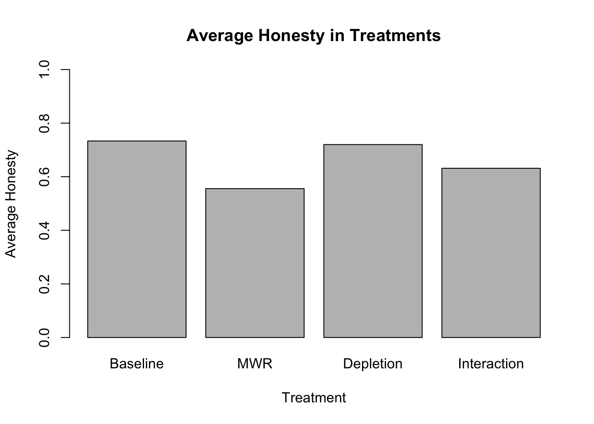

Traditional economic theory would predict rational agents to behave dishonestly if it maximizes the agent’s utility. Many experiments in psychology and experimental economics demonstrated that this prediction does not fully hold.
Studies such as Fischbacher and Heusi (2013) isolate internal reasons to behave honestly. Participants are asked to self-report the results of a die-roll they just performed. The experiment is fully anonymous and there is no way for the researcher to find out what number the participant actually rolled. Consequently, there are no reputational or strategic reasons for the participant to be honest. However, the study still finds robust levels of honest reporting.
Many theories have been developed which are intended to explain such, apparently irrational, behavior. A particularly popular theory is considering the role of a self-image. The idea is that human hold a specifc self-image and have some form of disutility from deviating from their self-image through actions. Shu, Gino, and Bazerman (2011), for example, hypothesise that such gap between one’s action and self-image leads to a state of cognitive dissonance, which individuals try to avoid. In other words: if individuals think of themselves to be honest, they dislike seeing themselves being dishonest.
Another factor which is being studied as possibly relevant to honesty is the level of ego-depletion. The idea is that honest behavior requires self-control and self-control is a limited mental resource (Hagger et al. 2010). Studies such as Mead et al. (2009) suggest that depletion reduces honestly, potentially through the mechanism of less self-conctrol due to ‘mental exhaustion’. However, other research suggests that lying increases demand on cognitive resources (Suchotzki et al. 2017; Job, Dweck, and Walton 2010; Greene and Paxton 2009) and thus, ego-depletion should lead to less lying. Hagger et al. (2010) suggest that such different outcomes might be due to different contexts.
Lastly, Ward and Beck (1990) find that gender is correlated with different levels of honesty and that further, there are different in the extent of ‘excuse making’ between genders.
In the context of the BDS501 Behavioral Economics & Psychology course at Penn, we conducted an experiment to shed light on the above mentioned factors and their possible interactions.
To capture intrinsic reasons to lie, we adapted Fischbacher and Heusi (2013)‘s roll-a-die paradigm. Participants are asked to roll a digital die and are then asked to report whether they rolled an even or odd number. Reporting an even number yields a higher payoff. This setup is our baseline treatment. As our first treatmet we created a novel design to test the self-image hypothesis by adapting Dana, Weber, and Kuang (2003)’s “Moral Wiggle Room Mechanism”. After the participants rolled the die, they are informed that they will have a 10 second window to report the outcome, however, the computer will cut them off at a random point during this time. By default, the switch is on the opposite value of which they rolled. Consequently, if a participant rolled an odd number, she can simply dither and let herself get cut off by the computer and receive the higher payoff. This distances the action from herself, as it ’was the computer’ who did the final reporting. In other words, it allows for an internal excuse that one was simply being cut off. However, the timer is programmed such that participant do have enough time to report honestly, if they intended to do so. Thus, this treatment should test whether, by using internal excuses, particpants increase their dishonesty as they can protect their self-image more easily. A second treatment group faces the baseline treatment but is asked to perform a depleting task beforehand (circling ’E’s in a text according to changing rules). Thirdly, an interaction treatment features both the Moral Wiggle Room mechanism and the depleting task. This treatment should capture possible interactive effects between the use of moral wiggle room and ego-depletion. A real-life example of such situation would be a stressed and depleted manager who is asked to self-report financial results.
We also collected information such as gender, which will allow for further analysis wether the effects above are different between genders. This is particularly relevant, given that Ward and Beck (1990) suggests that there are different levels of ‘excuse making’ and our Moral Wiggle Room device allows for a specific kind of ‘internal excuse making’.
Based on the literature review and the experimental design, we estblish the following four key hypothesis:
\(H_1\): Participants in the MWR condition will be less honest than participants in the baseline condition.
\(H_2\): Participants in the Depletion condition will be more honest than the participants in the baseline condition.
\(H_3\): Participants in the Interaction condition will be less honest than in any other condition.
\(H_{4a}\): Female participants will be more honest then male participants.
\(H_{4b}\): The negative effect of the MWR and Interaction treatment on honesty will be larger for male than for male participants.
The dataset contains 154 observations. The key variables for this analysis are whether a participant truthfully reported their outcome (Honest), which treatment the participant was selected into (Treatment) and several demographic variables, including gender (Gender). However, to use Honest as outcome variable, further analysis is needed: Honesty is a binary variable such that 1 = honestly reported and 0 = dishonestly reported. To use the proportion of honestly reported outcome to compare the effects of the treatments, we make the underlying assumption that the participants in all treatment groups had an equal chance of lying for their benefit. The following table reports the proportion of ‘even’ die rolls across the treatments:
Variable: Full$Even by Treatment
| Baseline | Depletion | Interaction | MWR | |
|---|---|---|---|---|
| Mean | 0.62 | 0.38 | 0.47 | 0.54 |
| Std.Dev | 0.49 | 0.49 | 0.51 | 0.51 |
The descriptive statistics show that the proportion of ‘Even’ rolls differs across the treatment groups. The virtual die was randomize, thus, the results might simply be due to the relatively small sample sizes. However, this is problematic for the following analysis, as e.g. in the Baseline treatment, only 38% of the participants had the possibility to lie to gain a higher payoff. In the Depletion treatment 62% had this possibility. To control for this problem, I will subset the data and only use participants that rolled an odd number in the first place. This reduces the sample size drastically, but is needed to make an accurate analysis. All following analysis will be based on this corrected dataset.
The table below reports the descriptive statistics of the outcome variable Honest, broken down by treatment group. The barplot visualizes the level of honesty in each treatment. ### Descriptive Statistics
Variable: FullOdd$Honest by Treatment
| Baseline | Depletion | Interaction | MWR | |
|---|---|---|---|---|
| Mean | 0.73 | 0.72 | 0.63 | 0.56 |
| Std.Dev | 0.46 | 0.46 | 0.50 | 0.51 |
| Min | 0.00 | 0.00 | 0.00 | 0.00 |
| Median | 1.00 | 1.00 | 1.00 | 1.00 |
| Max | 1.00 | 1.00 | 1.00 | 1.00 |

The analysis so far indicates that there are some directional differences between the treatments, with MWR having the lowest level of honesty. However, whether those differences are statistically significant will be discussed in the next section of this report.
The next table also includes the distributions of the demographic variables for the individual treatments.
| [ALL] | Baseline | Depletion | Interaction | MWR | N | |
|---|---|---|---|---|---|---|
| N=154 | N=39 | N=40 | N=36 | N=39 | ||
| Honest | 0.81 (0.39) | 0.90 (0.31) | 0.82 (0.38) | 0.75 (0.44) | 0.77 (0.43) | 154 |
| RT | 8.10 (4.93) | 10.2 (7.56) | 8.78 (4.32) | 6.96 (2.52) | 6.37 (2.51) | 154 |
| Age | 26.5 (11.6) | 26.3 (12.2) | 27.2 (11.8) | 27.4 (12.9) | 24.9 (9.66) | 151 |
| Education: | 154 | |||||
| College Degree (Associates or Bachelor’s | 46 (29.9%) | 8 (20.5%) | 12 (30.0%) | 11 (30.6%) | 15 (38.5%) | |
| Graduate Degree (Masters or above) | 27 (17.5%) | 7 (17.9%) | 9 (22.5%) | 6 (16.7%) | 5 (12.8%) | |
| Less than a College Degree | 81 (52.6%) | 24 (61.5%) | 19 (47.5%) | 19 (52.8%) | 19 (48.7%) | |
| Gender_Clean: | 154 | |||||
| F | 68 (44.2%) | 23 (59.0%) | 17 (42.5%) | 14 (38.9%) | 14 (35.9%) | |
| M | 73 (47.4%) | 12 (30.8%) | 19 (47.5%) | 20 (55.6%) | 22 (56.4%) | |
| NoneGiven | 13 (8.44%) | 4 (10.3%) | 4 (10.0%) | 2 (5.56%) | 3 (7.69%) |
We can see that the gender proportions differ across the treatment. Consequently, gender might not only be in interesting variable to look at because of possible gender differences in the reaction to the treatments, but it might also be a variable that needs to be controlled for (as it might introduce a bias if we compare e.g. Baseline with Interaction).
To test for wether participants under any of the treatment conditions have different levels of honesty and lying for gain, I will use pairwise proportion tests. The reason for this is the strong violation of normality due to the binary outcome variables. Further, I will use a proprtion tests to analyse whether there is a significant difference between males and females in honesty and lying for gain overall. I will employ the same test for the difference in honesty and lying for gain among females between treatments with moral wiggle room (MWR and Interaction) and treatments withou (Baseline, Depletion).
Lastly, I will use a logistic regression to control for possible gender and education confounders on the effect of the treatments on the honesty and lying for gain levels. The logistic regression is needed due to the binary outcome variable.
##
## 2-sample test for equality of proportions with continuity
## correction
##
## data: c(HonestMWRCount, HonestBCount) out of c(MWRN, BaselineN)
## X-squared = 0.48125, df = 1, p-value = 0.4879
## alternative hypothesis: two.sided
## 95 percent confidence interval:
## -0.5594761 0.2039205
## sample estimates:
## prop 1 prop 2
## 0.5555556 0.7333333With a p-value=0.49, we reject the alternative hypothesis of a significant difference between in honest reporting between the Baseline and Depletion treatment in favor of the null hypothesis of no difference.
##
## 2-sample test for equality of proportions with continuity
## correction
##
## data: c(HonestDCount, HonestBCount) out of c(DepletionN, BaselineN)
## X-squared = 8.3749e-32, df = 1, p-value = 1
## alternative hypothesis: two.sided
## 95 percent confidence interval:
## -0.3113749 0.2847082
## sample estimates:
## prop 1 prop 2
## 0.7200000 0.7333333With a p-value=1, we reject the alternative hypothesis of a significant difference between in honest reporting between the Baseline and Depletion treatment in favor of the null hypothesis of no difference.
##
## 2-sample test for equality of proportions with continuity
## correction
##
## data: c(HonestXCount, HonestBCount) out of c(InteractionN, BaselineN)
## X-squared = 0.067901, df = 1, p-value = 0.6028
## alternative hypothesis: greater
## 95 percent confidence interval:
## -0.4229493 1.0000000
## sample estimates:
## prop 1 prop 2
## 0.6315789 0.7333333##
## 2-sample test for equality of proportions with continuity
## correction
##
## data: c(HonestXCount, HonestMWRCount) out of c(InteractionN, MWRN)
## X-squared = 0.018441, df = 1, p-value = 0.892
## alternative hypothesis: two.sided
## 95 percent confidence interval:
## -0.2938866 0.4459334
## sample estimates:
## prop 1 prop 2
## 0.6315789 0.5555556##
## 2-sample test for equality of proportions with continuity
## correction
##
## data: c(HonestXCount, HonestDCount) out of c(InteractionN, DepletionN)
## X-squared = 0.088221, df = 1, p-value = 0.7665
## alternative hypothesis: two.sided
## 95 percent confidence interval:
## -0.4140622 0.2372201
## sample estimates:
## prop 1 prop 2
## 0.6315789 0.7200000As all p-values are far larger than any conventional significance levels, we reject the alternative hypothesis of honesty being larger in the Interaction treatment than in any other treatment in favor of the null hypothesis of no difference.
The logistic regression is specified as follows:
Model 1: \(log(\frac{p_{honest}}{1-p_{honest}}) = \beta_0 + \beta_{1k} Treatment_k\)
Model 2: \(log(\frac{p_{honest}}{1-p_{honest}}) = \beta_0 + \beta_{1k} Treatment_k + \beta_2 Female\)
Model 3: \(log(\frac{p_{honest}}{1-p_{honest}}) = \beta_0 + \beta_{1k} Treatment_k + \beta_2 Female + \beta_{3k} Treatment_k*Female\)
| Dependent variable: | |||
| Honest Reporting | |||
| (1) | (2) | (3) | |
| TreatmentDepletion | -0.067 | -0.140 | -0.693 |
| (0.734) | (0.742) | (1.245) | |
| TreatmentInteraction | -0.473 | -0.487 | -0.511 |
| (0.753) | (0.757) | (1.366) | |
| TreatmentMWR | -0.788 | -0.919 | -1.273 |
| (0.752) | (0.772) | (1.242) | |
| Female | -0.452 | -0.916 | |
| (0.504) | (1.304) | ||
| TreatmentDepletion:Female | 0.981 | ||
| (1.584) | |||
| TreatmentInteraction:Female | 0.000 | ||
| (1.653) | |||
| TreatmentMWR:Female | 0.580 | ||
| (1.646) | |||
| Constant | 1.012* | 1.294* | 1.609 |
| (0.584) | (0.672) | (1.095) | |
| Observations | 77 | 77 | 77 |
| Log Likelihood | -48.392 | -47.986 | -47.640 |
| Akaike Inf. Crit. | 104.784 | 105.973 | 111.280 |
| Note: | p<0.1; p<0.05; p<0.01 | ||
The first model specification only includes the individual treatments. As in the pairwise chi-squared tests, we do not find any significant effects. However, within the sample, the MWR treatment is associated with the lowest level of honesty. The logit esimate for the log of odds ratio between MWR participants and Baseline participants is -0.788, the odds ratio is 0.4547534. In other words, the odds of being honest under MWR treatement is 0.4547534 times that under Baseline. As mentioned before, this difference is not a valid inference to the population as a whole, as the estimate of the coefficient is not significant.
The second model includes a control dummy variable for being female. This coefficient only estimates an overall difference in honesty between the genders over all treatments. It is estimated to be -0.452, meaning the odds of a female participant to be honest is, on average, 0.6363542 that of a male participant. This would indicate that female participants, on average across all treatments, were slightly less honest than men. However, also this coefficient is not significant. Consequently, we do not have reason to accept \(H_{4a}\), that female participants are more honest then male participants.
Lastly, the third model includes interactions between the individual treatment groups and the female dummary variable. Those additional coefficient estimate the difference in the effect of a treatment on honesty between females and males. \(H_{4b}\) states that the negative effect of the MWR and Interaction treatment on honesty will be larger for female than for male participants. However, the estimates suggest that the differences in the effects between females and males compare as follows: -1.273 (MWR) > -0.916 (Baseline) > -0.693 (Depletion) > -0.511 (Interaction). In other words, there is no systematically larger negative effect for both the Interaction and MWR treatment. Furthermore, all interaction coefficients are insigficant. Thus, there is no evidence to support \(H_{4b}\). It should also be noted, that the inclusion of gender control variables did not lead to any of the treatment coefficient becoming significant. However, it should also be noted, that adding this amount of control variables slices the, already small, sample into even smaller pieces. This reduces the power of the analysis even further and thus, all the results should be interpreted with caution.
While the analysis of the experimental results shows some trend for the MWR and Interaction treatment to be associated with lower levels of honesty, we cannot conclude on any differences between the treatments with confidence. None of the results are statistically significant. Consequently, we cannot reject any null hypothesis of no difference between treatments or gender. However, this null-results should not be taken as proof of no difference in the population. The sample size was small and the further analysis reduces the power of the analysis even further. To make more confident inferences about the population, the experiment would have to be rerun with a bigger sample size.
Dana, Jason D., Roberto A. Weber, and Jason Kuang. 2003. “Exploiting Moral Wriggle Room: Behavior Inconsistent with a Preference for Fair Outcomes.” SSRN Electronic Journal. doi:10.2139/ssrn.400900.
Fischbacher, Urs, and Franziska Heusi. 2013. “Lies in Disguise-an Experimental Study on Cheating: Lies in Disguise.” Journal of the European Economic Association 11 (3): 525–47. doi:10.1111/jeea.12014.
Greene, Joshua D, and Joseph M Paxton. 2009. “Patterns of Neural Activity Associated with Honest and Dishonest Moral Decisions.” Proceedings of the National Academy of Sciences 106 (30). National Acad Sciences: 12506–11.
Hagger, Martin S, Chantelle Wood, Chris Stiff, and Nikos LD Chatzisarantis. 2010. “Ego Depletion and the Strength Model of Self-Control: A Meta-Analysis.” Psychological Bulletin 136 (4). American Psychological Association: 495.
Job, Veronika, Carol S Dweck, and Gregory M Walton. 2010. “Ego Depletion—Is It All in Your Head? Implicit Theories About Willpower Affect Self-Regulation.” Psychological Science 21 (11). Sage Publications Sage CA: Los Angeles, CA: 1686–93.
Mead, Nicole L, Roy F Baumeister, Francesca Gino, Maurice E Schweitzer, and Dan Ariely. 2009. “Too Tired to Tell the Truth: Self-Control Resource Depletion and Dishonesty.” Journal of Experimental Social Psychology 45 (3). Elsevier: 594–97.
Shu, Lisa L., Francesca Gino, and Max H. Bazerman. 2011. “Dishonest Deed, Clear Conscience: When Cheating Leads to Moral Disengagement and Motivated Forgetting.” Personality and Social Psychology Bulletin 37 (3): 330–49. doi:10.1177/0146167211398138.
Suchotzki, Kristina, Bruno Verschuere, Bram Van Bockstaele, Gershon Ben-Shakhar, and Geert Crombez. 2017. “Lying Takes Time: A Meta-Analysis on Reaction Time Measures of Deception.” Psychological Bulletin 143 (4). American Psychological Association: 428.
Ward, David A, and Wendy L Beck. 1990. “Gender and Dishonesty.” The Journal of Social Psychology 130 (3). Taylor & Francis: 333–39.